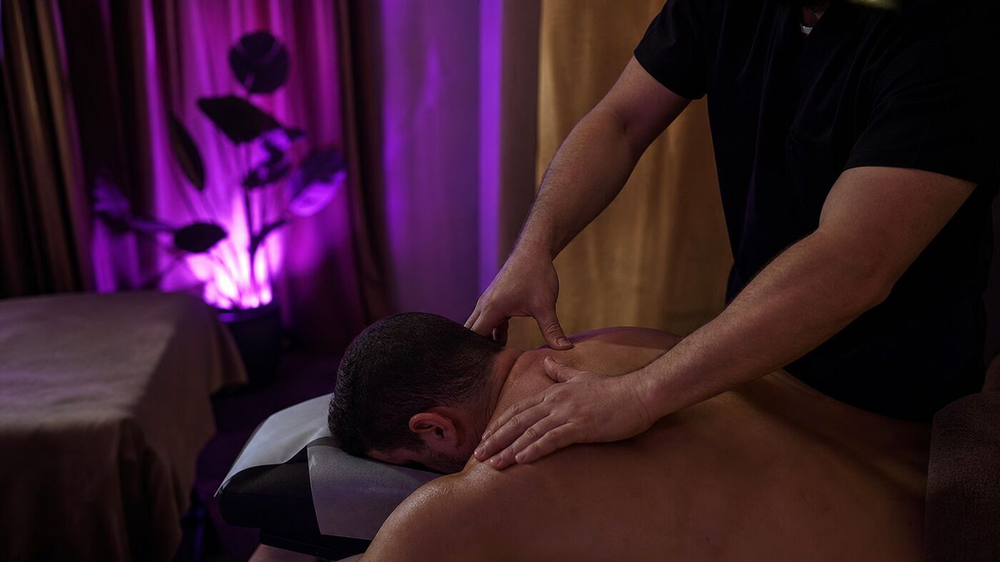

Our specialized services
Non-invasive therapies tailored to your unique wellness needs.

EESystem Session (Energy Enhancement System)
The EESystem is a non-invasive wellness therapy that uses custom devices to generate bio-active energy fields, including "scalar waves" and biophotonic color and light. These fields are designed to create an environment where the body can relax, reset its electrical matrix, and support its own natural healing and regenerative processes at a cellular level.
Learn About EESystemNerveWorx Technique — Functional Neurology, Brain & Body Recovery
This technique offers a holistic, non-invasive approach to neurological rehabilitation, focusing on the nervous system and body as a whole. By combining principles of quantum physics, light therapy, and nerve-specific exercises, it helps address a wide range of neurological illnesses, injuries, infections, and functional conditions. Because the approach is tailored to each individual, we can target specific regions of the nervous system to restore balance and enhance overall function. Many clients report improved mobility, reduced pain, enhanced cognitive performance, and more.
Learn About NerveWorx